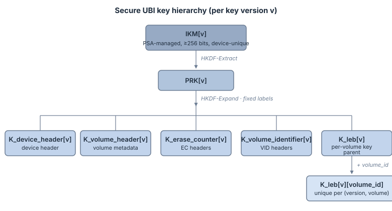
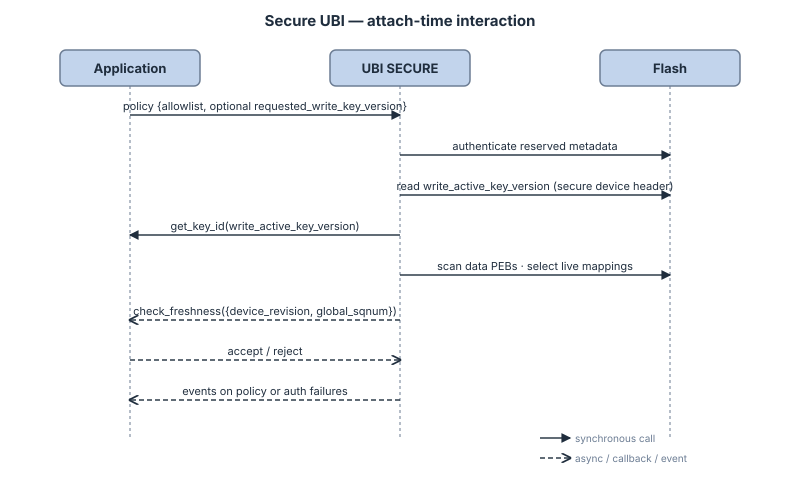
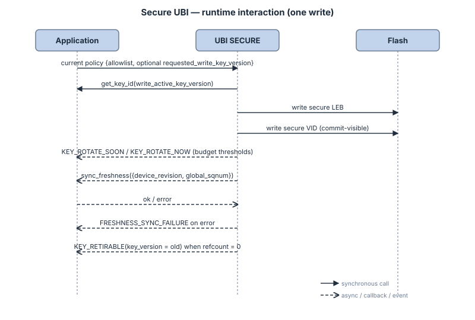

Secure On-Flash Format Specification¶
Status: normative specification. Audience: implementers, security reviewers, and auditors. Scope: the SECURE on-flash format for UBI — encrypted device and volume metadata, encrypted EC/VID/data records, key hierarchy, nonce/AAD rules, counter continuity, anchors, application-facing freshness, secure volume lifecycle, recovery scenarios, and runtime policy.
This document is the single source of truth for the bytes on flash and the rules that govern them. Developers who only need to use Secure UBI should start with the developer-targeted Secure Architecture: Overview and Secure UBI Workflow first, and consult this specification when an integration question is not answered there.
Prerequisites: What is UBI? and Architecture Guide for the plain UBI mental model, volume_id, sqnum, reserved PEB mirroring, and the DATA -> VID crash model.
1. 30-second summary¶
A UBI device works in exactly one mode: PLAIN or SECURE.
SECURE keeps the plain UBI object model and crash model, but wraps every commit-visible object in authenticated encryption:
secure device header,
secure volume header,
secure erase-counter (EC) header,
secure volume-identifier (VID) header,
secure LEB record.
The inner plain payloads stay the same; only their on-flash representation, keying, authentication, and recovery rules change.
1.1 What SECURE changes at a glance¶
Pillar |
What SECURE changes |
What the application gets |
|---|---|---|
Same UBI semantics |
The secure record wraps the existing plain payload instead of replacing the UBI model. |
Wear-leveling, logical volumes, |
Full encrypted format |
Device metadata, volume metadata, EC, VID, and user LEB data are encrypted and authenticated. Only the 32-byte common prefix stays parseable before authentication. |
No meaningful UBI metadata or user payload is left in plaintext on flash. |
Versioned key hierarchy |
One |
Strong domain separation and per-volume isolation for LEB data. |
Key lifecycle built into the format |
SECURE tracks |
The application does not need to reinvent key-rotation safety inside the filesystem or database. |
Freshness exported to the application |
UBI exports authenticated |
The application can implement rollback / replay detection against its own trusted freshness store. |
Future-write continuity is explicit |
Hidden per-volume anchors preserve per-volume LEB floors, and the secure device header preserves the global VID-domain floor. |
Secure writes can continue safely after reclaim, |
1.2 Tamper resistance¶
For an overview of what an attacker with raw-flash access can and cannot do without an accepted IKM[key_version], see Secure Architecture: Overview § 2 Threat model. This specification defines the byte-level format and rules that make those properties hold.
1.3 Plain-core baseline assumed by this document¶
This specification assumes that the plain UBI core already provides these baseline properties:
reclaimed data PEBs receive a valid EC header before they re-enter the free pool, and the mapping-visible write order on such a PEB is
DATA -> VID,initialization distinguishes
freefromuncommittedby checking both the VID area and the beginning of the LEB area,erased-state checks use the runtime flash erased value and never hardcode
0xFF,all commit-visible mutating operations pass through one central mutation gate,
volume_idis a durable, monotonically allocated identifier that is not reused during the lifetime of one formatted device.
Those assumptions matter because SECURE mode reuses the same logical object model and the same recovery points. In particular, the secure design relies on VID being the commit-visible mapping record and on volume_id being a stable namespace input for per-volume key derivation, usage recovery, and retirement decisions.
1.4 Mode detection and out-of-scope transitions¶
PLAIN and SECURE are different on-flash formats.
The library is multi-backend capable: both plain and secure backends may be compiled into the same binary. However, each ubi_device handle operates in exactly one mode — the mode is selected at runtime during ubi_device_init() based on the caller-supplied secure_cfg pointer and the detected on-flash format:
secure_cfg == NULLrequests plain mode,secure_cfg != NULLrequests secure mode,for blank media the requested mode determines the format,
for non-blank media the detected on-flash format must match the requested mode.
This runtime selection model allows a single firmware image to manage both a plain UBI partition on internal flash and a secure UBI partition on external flash, each with its own independent ubi_device handle.
Normative rule:
a secure-mode attach shall accept only SECURE-formatted media,
a plain-mode attach shall accept only plain-formatted media,
a mode mismatch between the caller’s request and the detected format is a hard error,
silent fallback is forbidden,
automatic reformat is forbidden,
in-place migration between PLAIN and SECURE is out of scope and must be rejected.
This document intentionally does not define mixed-mode operation on one partition, automatic reformat, or any attach-time conversion path. If a product ever needs migration, that flow must be an explicit offline tool or explicit maintenance procedure outside the normal attach path.
The practical detection point is the reserved area. SECURE media are identified by the secure wrapper magic at the reserved-header locations. A mode mismatch is a format mismatch, not a conversion opportunity.
Periodic runtime re-audit of the medium against the freshness store is intentionally out of scope. The check_freshness callback remains an attach-time-only interaction. If a product needs active periodic auditing, that should be a separate API or maintenance path, not a change to the check_freshness semantics.
2. High-level picture¶
2.1 Layer view¶
+--------------------------------------------------------------------------------------+
| Application / filesystem / database / trusted freshness store |
| - provides key IDs, allowlist, and policy callbacks |
| - stores trusted freshness state and decides rollback policy |
+--------------------------------------------------------------------------------------+
| UBI SECURE |
| - same UBI semantics: volume management, EBA mapping, wear-leveling, reclaim |
| - secure wrappers: device, volume, EC, VID, LEB |
| - key hierarchy, nonce/AAD, budgets, refcounts, hidden anchors, VID floor |
+--------------------------------------------------------------------------------------+
| Raw flash partition |
| - reserved PEBs: secure device header + secure volume headers |
| - data PEBs: secure EC + secure VID + secure LEB, plus hidden anchors |
+--------------------------------------------------------------------------------------+
Boundary summary:
Direction |
Interface |
|---|---|
Application → UBI |
PSA key identifiers for versioned root keys, allowlist of acceptable key versions, optional request to advance the write-active key version, init-time freshness policy callback, optional post-commit freshness-sync callback, event callback |
UBI → Application |
authenticated |
SECURE mode assumes that the plain-core central mutation gate already exists. Secure policy hooks attach to that same gate so that all commit-visible mutating operations are observed at one place.
Because the library supports runtime backend selection, a single firmware image may hold both a plain and a secure ubi_device simultaneously. Each handle uses its own backend, its own configuration, and its own lock. There is no shared mutable state between handles and no cross-talk between the plain and secure backends.
2.2 Flash view¶
UBI partition
================================================================================
Reserved PEB area (CONFIG_UBI_DEV_HDR_NR_OF_RES_PEBS, range 2..4)
+--------------------------------------------------------------------------------------+
| Reserved PEB 0 | secure device header + secure volume headers |
| Reserved PEB 1 | secure device header + secure volume headers |
| Reserved PEB 2 | optional spare mirror bank |
| Reserved PEB 3 | optional spare mirror bank |
+--------------------------------------------------------------------------------------+
Data PEB area
+--------------------------------------------------------------------------------------+
| Data PEB N | secure EC header | secure VID header | secure LEB record |
| Data PEB N+1 | secure EC header | secure VID header | secure LEB record |
| ... | ... | ... | ... |
+--------------------------------------------------------------------------------------+
Hidden anchor PEBs
+--------------------------------------------------------------------------------------+
| Internal per-volume data PEBs using the same secure EC / secure VID / secure LEB |
| layout. `vid_hdr.lnum = INTERNAL_ANCHOR_LNUM`; secure LEB payload is zero-length. |
+--------------------------------------------------------------------------------------+
2.3 One data PEB¶
Offset from start of physical eraseblock
================================================================================
0x0000 +---------------------------------------------------------------+
| secure EC header |
| prefix32 | ciphertext(ec_hdr) | tag16 |
+---------------------------------------------------------------+
0x0040 +---------------------------------------------------------------+
| secure VID header |
| prefix32 | ciphertext(vid_hdr + vid_secure_meta) | tag16 |
+---------------------------------------------------------------+
0x00A0 +---------------------------------------------------------------+
| secure LEB record |
| single-tag : prefix32 | ciphertext(payload_bytes) | tag16 |
| chunked : prefix32 | chunk0 ciphertext | tag0 | ... |
+---------------------------------------------------------------+
For the base single-tag layout, secure data-PEB metadata consumes 208 B:
secure EC header: 64 B
secure VID header: 96 B
secure LEB prefix: 32 B
secure LEB tag: 16 B
3. Scope¶
This specification defines the byte-level SECURE on-flash format and the rules that govern it. The what / why view of SECURE mode — what the application gets, the threat model, and the explicit security boundary (no global journal, no hardware monotonic counter, external freshness store still required for complete anti-rollback) — lives in Secure Architecture: Overview § 1–3.
4. Terminology and invariants¶
4.1 Terms¶
Physical eraseblock index
The numeric index of a physical eraseblock inside the UBI partition. This document writes it out in full; it does not rely on the shorter pnum nickname.
Flash offset
A byte offset from the beginning of the UBI partition.
Commit-visible
State that survives power loss and is visible to init without consulting transient RAM state.
Authenticated object
A secure record whose AEAD verification succeeded with an allowlisted key version.
Live mapping
The winning (volume_id, lnum) mapping selected by the highest authenticated vid_sqnum.
Dirty PEB
A data PEB that still contains stale or interrupted state and must be erased before reuse.
Free data PEB
A data PEB with a valid secure EC header, an erased secure VID area, and an erased secure LEB-prefix area. “Erased” always means equal to the flash device’s configured erased value. It must never be hardcoded to 0xFF.
Uncommitted data PEB
A data PEB with a valid secure EC header and an erased secure VID area, but with non-erased bytes in the secure LEB-prefix area. This represents an interrupted DATA -> VID write and must not be classified as free.
Hidden anchor PEB
A live, internal, non-user-addressable data PEB owned by one secure volume. It uses a dedicated internal logical number, stores a zero-length secure LEB record, and can carry the authoritative per-volume LEB usage floor when user mappings disappear.
Volume identifier (volume_id)
A durable identifier assigned when a volume is created. volume_id is monotonic, persists across reboot, and is not reused during the lifetime of one formatted device. SECURE mode uses volume_id as the per-volume cryptographic identity.
VID next-counter floor
The monotonic floor for future secure VID writes under the current authenticated write_active_key_version. SECURE stores this value in the secure device header as vid_next_counter_floor.
Naming note
The term volume_id in this document names the durable per-volume identity currently carried by the plain-core vol_id field. The longer name is intentional: it makes the cryptographic identity explicit and avoids overloading local scan or RAM bookkeeping ordinals.
Export-width note for device_revision
The API may expose device_revision as a widened integer type for convenience. If a concrete implementation stores a narrower on-flash revision field, widening must preserve the numeric value and ordering semantics.
4.2 Core invariants¶
After successful initialization:
Every live user LEB maps to exactly one data PEB.
Every secure volume also owns exactly one live hidden anchor mapping, identified by a dedicated internal logical number that is never exposed through the user API.
Among competing authenticated VIDs for the same
(volume_id, lnum), the highervid_sqnumwins.A dirty PEB must be erased before it can re-enter the free pool.
Reserved PEBs are used only for secure device and volume metadata.
The authenticated secure device header stores:
write_active_key_versionvid_next_counter_floor
For secure LEB writes, the authoritative next write counter and total authenticated bytes are recovered from authenticated VID-side metadata, including the hidden anchor when user mappings disappear.
volume_idis unique for the lifetime of one formatted device and is the only per-volume cryptographic identity. No reusable RAM index or scan-local ordinal may appear in LEB key derivation, LEB usage recovery state, or retirement logic.The write-active key version is monotonic and must never move back to an older value on the same formatted device.
A key version becomes retirable only when no authenticated on-flash object still references it.
The device must not perform a secure write if it cannot construct a fresh nonce from cryptographically secure randomness.
All commit-visible mutating operations pass through one central mutation gate so that secure policy and freshness hooks observe the same transition points.
SECURE must preserve a path to one emergency free data PEB for hidden-anchor maintenance. It shall either keep one free data PEB available or first reclaim a dirty PEB that is not the last current writable witness before reclaiming a protected witness. It must never erase the last current writable witness first and only afterwards discover that there is nowhere to commit the inherited anchor state.
5. Cryptographic profile¶
5.1 Algorithm choice¶
UBI SECURE uses AES-128-CCM for all authenticated-encryption records. Child AEAD key size is fixed at 128 bits. The rationale (record-shaped traffic, explicit AAD, embedded AEAD support) is discussed in Secure Architecture: Overview § 3.
5.2 CCM parameters¶
This architecture fixes:
nonce length = 13 bytes
tag length = 16 bytes
That implies the standard CCM relation:
n + q = 15
13 + 2 = 15
With q = 2, one CCM invocation can cover:
payload_len < 2^(8*q) = 65536 bytes
So the architecture requires:
secure_leb_payload_bytes < 65536
This must be enforced both:
as a compile-time guard for supported geometries, and
as a runtime rejection if a larger geometry is somehow presented.
For the base single-tag secure LEB layout, the maximum logical payload on one data PEB is:
secure_leb_payload_bytes_single = peb_size - 208
Therefore single-tag mode is valid only if:
peb_size - 208 < 65536
If that condition is false for the selected geometry, SECURE must either:
require chunked LEB mode for that geometry, or
reject SECURE mode at build time or initialization time.
5.3 Two LEB metrics: invocations and authenticated bytes¶
CCM requires nonce uniqueness per key, and its security margin degrades with cumulative authenticated data. UBI therefore tracks two monotonic usage dimensions per LEB key {key_version, volume_id}:
leb_write_counter— the next unused AEAD / nonce-counter value (also the number of invocations consumed so far),leb_total_auth_bytes— cumulative authenticated bytes (AAD bytes + payload plaintext bytes).
For metadata keys, both dimensions are still evaluated, but accounting differs:
metadata AEAD-invocation count is recovered directly from authenticated
prefix32.countervalues,metadata authenticated-byte usage is derived (not persisted) because each metadata record type has a fixed plaintext size and a fixed AAD shape.
The architecture does not persist an internal AES-128 block-operation count; budgets are expressed in invocations and authenticated bytes only. Both are checked before a new write is committed.
5.4 Entropy source requirement¶
Every secure record prefix carries a fresh 6-byte salt. That salt must come from a cryptographically secure random source.
The architectural requirement is:
SECURE writes use PSA random generation or an equivalent cryptographically secure RNG,
non-cryptographic RNG APIs and test RNG backends are forbidden for secure nonce construction,
if secure randomness is unavailable, the write must fail closed.
In other words, the device must not attempt a secure write unless it can produce a fresh unpredictable nonce salt for that write.
6. Key material and key hierarchy¶
6.1 Root key model and minimum requirement¶
The root key material for one key version is written conceptually as:
IKM[v]
SECURE mode is PSA-only. IKM[v] remains a conceptual term in the architecture, but the normal implementation contract is:
the application provides a PSA key identifier for key version
v,that PSA key refers to device-unique secret root material,
UBI does not receive raw root-key bytes through its normal API surface,
child keys should remain non-exportable PSA keys whenever the platform supports that flow.
The root-key requirement is:
IKM[v]shall represent at least 256 bits of secret, device-unique input key material,IKM[v]must have high effective entropy,IKM[v]must be unique per device,the application may satisfy that by provisioning a device-unique root secret directly,
or by deriving
IKM[v]from a device-unique secret such as HUK/DHUK.
The following are not acceptable by themselves:
serial number,
MAC address,
UUID,
devicetree data,
any other low-entropy identifier.
This is mandatory. Without device-unique keying, a full flash clone could be readable on another device with the same root key material.
If a platform cannot provide all of the following, SECURE mode is unsupported on that platform:
PSA AEAD for
AES-128-CCM,PSA key derivation for
HKDF-SHA-256,cryptographically secure random generation.
6.2 Child keys¶
UBI derives child keys from IKM[v] using HKDF-SHA-256.
The KDF encoding is normative.
Extract step:
PRK[v] = HKDF-Extract(salt = "", IKM[v])
Expand-step output length:
L = 16 bytes
Exact expand labels in the current format:
K_device_header[v]
= HKDF-Expand(PRK[v],
"UBI" || 0x00 || "DEVICE-HEADER" || 0x00 || 0x01,
L)
K_volume_header[v]
= HKDF-Expand(PRK[v],
"UBI" || 0x00 || "VOLUME-HEADER" || 0x00 || 0x01,
L)
K_erase_counter[v]
= HKDF-Expand(PRK[v],
"UBI" || 0x00 || "ERASE-COUNTER" || 0x00 || 0x01,
L)
K_volume_identifier[v]
= HKDF-Expand(PRK[v],
"UBI" || 0x00 || "VOLUME-IDENTIFIER" || 0x00 || 0x01,
L)
K_leb[v][volume_id]
= HKDF-Expand(PRK[v],
"UBI" || 0x00 || "LEB" || 0x00 || 0x01 || be32(volume_id),
L)
Normative rules:
HKDF salt is the zero-length string in the definitions above,
0x01is the current format/KDF compatibility byte,all integer fields inside KDF context are big-endian,
volume_idis encoded asbe32(volume_id),the exact label bytes above are part of on-flash compatibility and must not change without an explicit format-version change.
The LEB key is volume-specific. That is why the LEB usage budget is tracked per:
{key_version, volume_id}
The key hierarchy itself is:
{kind=link}

Runtime accounting is attached to those domains, but it is not part of the derived key material itself:
K_device_header[key_version]
-> next_counter[{device_header, key_version}]
K_volume_header[key_version]
-> next_counter[{volume_header, key_version}]
K_erase_counter[key_version]
-> next_counter[{erase_counter, key_version}]
K_volume_identifier[key_version]
-> next_counter[{volume_identifier, key_version}]
secure device header
-> write_active_key_version
-> vid_next_counter_floor
K_leb[key_version][volume_id]
-> next_leb_write_counter
-> next_leb_total_auth_bytes
This separation is intentional:
child keys come from HKDF only,
counters and usage floors are runtime / on-flash accounting state associated with those keys,
the counters are never fed back into HKDF as additional key-derivation input.
volume_id is the only durable per-volume namespace input allowed in LEB key derivation. Any reusable RAM index or scan-local ordinal is explicitly out of scope for secure identity.
By contrast, the VID-domain key remains global for one key version:
K_volume_identifier[key_version]
That is why SECURE preserves future secure VID-write continuity with the authenticated vid_next_counter_floor stored in the secure device header, instead of attempting to namespace the VID key by volume_id.
6.3 Chunked mode reuses the base LEB key¶
Chunked mode does not derive a second per-chunk key hierarchy.
The base key remains:
K_leb[v][volume_id]
and that same key is reused for every chunk of the current secure LEB record.
Nonce uniqueness comes from the combination of:
one fresh per-record
salt,one monotonic
counter_basestored inprefix32.counter,one per-chunk counter increment,
chunk_indexincluded in AAD.
This is sufficient because CCM requires nonce uniqueness per key. It does not require a different key per chunk.
The design therefore keeps chunked mode simple:
one LEB key per
{key_version, volume_id},one prefix for the whole record,
no extra chunk-key table,
no extra HKDF work during reads or writes beyond the normal LEB-key derivation.
Chunked mode still increases the LEB usage budget because one logical write can consume more than one AEAD invocation. That accounting is described in sections 8.2 and 9.7.
6.4 Plain and secure record types are separate¶
The plain payload structures (ubi_dev_hdr, ubi_vol_hdr, ubi_ec_hdr, ubi_vid_hdr) are reused unchanged inside SECURE records. The secure records are distinct wrapper types that add the common prefix, secure-only metadata, the AEAD tag, AAD rules, and versioning. Plain and secure record definitions therefore evolve independently.
7. Secure record formats¶
7.1 Common prefix¶
Every secure record begins with the same 32-byte prefix:
struct ubi_secure_prefix32 {
uint32_t magic; /* format magic */
uint8_t wrapper_version; /* current on-flash format version */
uint8_t domain; /* DEVICE_HEADER / VOLUME_HEADER / ERASE_COUNTER / VOLUME_IDENTIFIER / LEB */
uint8_t key_version; /* version of IKM[v] */
uint8_t flags; /* record flags */
uint8_t salt[6]; /* fresh RNG salt */
uint8_t counter[6]; /* monotonic AEAD counter or counter base */
uint8_t reserved[12]; /* zero in the current format */
};
Properties:
magicis 32 bits,wrapper_versionis fixed for the current on-flash format; every secure read path validates it immediately after the magic check and rejects records whosewrapper_versiondoes not match the build-timeUBI_SECURE_WRAPPER_VERSIONwith-EBADMSG, before any key derivation or AEAD work — an unknown format version is a parse-time error, never an authentication failure,saltstays 6 bytes,counterstays 6 bytes,the prefix is plaintext for parsing,
the prefix becomes trustworthy only after AEAD verification succeeds,
all multi-byte integers in the prefix are serialized in big-endian.
7.2 Secure record names¶
The document uses these names consistently:
secure device header
secure volume header
secure erase-counter (EC) header
secure volume-identifier (VID) header
secure LEB record
7.3 Secure device header¶
The secure device header encrypts two payloads together:
inner
struct ubi_dev_hdrsecure device-side crypto metadata
struct ubi_dev_secure_meta {
uint8_t write_active_key_version; /* authenticated current write-active version */
uint8_t reserved0[7]; /* zero in the current format */
uint64_t vid_next_counter_floor; /* next unused VID counter for write_active_key_version */
};
Normative rules:
write_active_key_versionis part of authenticated on-flash policy state,in the current format,
write_active_key_versionshall match the authenticatedprefix32.key_versionof the secure device header record,vid_next_counter_flooris monotonic and never decreases,when the write-active key version advances to a newer value,
vid_next_counter_flooris reinitialized to that newer version’s first valid VID counter and the old version never becomes write-active again.
+----------+------------------------------------------+--------+
| prefix32 | ciphertext(dev_hdr + dev_secure_meta) | tag16 |
+----------+------------------------------------------+--------+
32 B 48 B 16 B total = 96 B
7.4 Secure volume header¶
+----------+------------------------+--------+
| prefix32 | ciphertext(vol_hdr) | tag16 |
+----------+------------------------+--------+
32 B 48 B 16 B total = 96 B
7.5 Secure EC header¶
+----------+------------------------+--------+
| prefix32 | ciphertext(ec_hdr) | tag16 |
+----------+------------------------+--------+
32 B 16 B 16 B total = 64 B
7.6 Secure VID header¶
The secure VID header contains two plaintext domains encrypted together:
inner
struct ubi_vid_hdrsecure VID-side LEB metadata
struct ubi_vid_secure_meta {
uint64_t leb_write_counter; /* next unused AEAD counter for {key_version, volume_id} */
uint64_t leb_total_auth_bytes; /* cumulative authenticated bytes (AAD + payload) for {key_version, volume_id} */
};
+----------+----------------------------------------+--------+
| prefix32 | ciphertext(vid_hdr + vid_secure_meta) | tag16 |
+----------+----------------------------------------+--------+
32 B 48 B 16 B total = 96 B
These two fields are the authoritative write-usage recovery state for:
{key_version, volume_id}
They exist for one reason:
init already needs to authenticate secure VID records,
therefore init can recover future LEB write state without reading and authenticating every LEB payload.
Every committed secure VID record and its corresponding secure LEB record use the same key_version.
vid_hdr.volume_id is the durable, never-reused volume identity provided by the plain core. It is the LEB key-derivation input and the identity used by runtime usage accounting.
7.7 Secure LEB record (single-tag mode)¶
+----------+---------------------------+--------+
| prefix32 | ciphertext(payload_bytes) | tag16 |
+----------+---------------------------+--------+
Important points:
payload_bytesis the current logical payload length,payload_bytesis taken from authenticatedvid_hdr.data_size,if authenticated
vid_hdr.data_size == 0, SECURE still writes a zero-length secure LEB record using the baseprefix32 || tag16layout with zero ciphertext bytes,for that zero-length case, one AEAD invocation is still consumed and
leb_total_auth_bytesadvances by the fixed zero-length LEB AAD size,single-tag mode is valid only when authenticated
payload_bytes < 65536,this CCM payload limit is enforced at runtime:
ubi_secure_leb_data_writerejectslen > UBI_SECURE_LEB_SINGLE_TAG_MAX_PAYLOAD(65535) with-EFBIG,ubi_secure_leb_data_readrejectsvid_hdr.data_size > UBI_SECURE_LEB_SINGLE_TAG_MAX_PAYLOADwith-EBADMSG, and in non-chunked builds device init rejects geometries withleb_size > UBI_SECURE_LEB_SINGLE_TAG_MAX_PAYLOADwith-EINVAL,the architecture does not require buffering the full maximum LEB capacity when the logical payload is shorter,
but single-tag mode still requires full authentication of the complete recorded payload before any plaintext may be returned,
if flash write alignment requires a longer terminal write, any extra bytes must appear only after
tag16, must be written as the flash erased value, and are outside the authenticated record,read-side record length comes only from authenticated
vid_hdr.data_size; trailing tail bytes aftertag16are ignored.
7.8 Secure LEB record (chunked mode)¶
Chunked mode keeps the same prefix and the same secure VID metadata. Only the payload body changes:
+----------+--------------------+------+--------------------+------+-----+
| prefix32 | chunk0 ciphertext | tag0 | chunk1 ciphertext | tag1 | ... |
+----------+--------------------+------+--------------------+------+-----+
Rules:
chunk size is fixed by Kconfig,
chunk index starts at
0,all chunks use the same base key
K_leb[key_version][volume_id],chunk index is included in AAD,
the chunk count is derived from authenticated
vid_hdr.data_size:
chunk_count = ceil(data_size / chunk_size) for data_size > 0
if
data_size == 0, SECURE falls back to the zero-length base recordprefix32 || tag16; no per-chunk tags are present,for
data_size > 0,leb_write_counteradvances bychunk_countandleb_total_auth_bytesadvances bydata_size + chunk_count * fixed_leb_aad_bytes_chunked,for the zero-length fallback,
leb_write_counteradvances by1andleb_total_auth_bytesadvances byfixed_leb_aad_bytes_single,if chunk ciphertext is written directly to flash,
chunk_sizeshould be a multiple of the flash write alignment,if one
(chunk ciphertext || tag)write would violate the target flash alignment rule, the implementation must either use an aligned staging buffer or reject the configuration.
Chunked mode is optional only for geometries where single-tag mode is valid. For geometries that violate the single-tag CCM payload limit, chunked mode becomes mandatory if SECURE is supported at all.
7.10 Integrity semantics of inner CRC fields¶
The inner plain payloads may still contain fields such as hdr_crc. In SECURE mode, their meaning is reduced to compatibility and optional format-consistency, not primary security.
Normative rule:
AEAD verification is the authoritative integrity and authenticity decision.
Inner CRC fields are not an independent trust primitive in SECURE mode.
If retained, inner CRC fields may be recomputed on write so that the embedded plain payload stays self-consistent.
If checked on read, an inner CRC mismatch after successful AEAD verification is a format violation of authenticated plaintext, not a separate authenticity result.
Inner CRC fields must not be used for nonce construction, AAD cross-record binding, rollback logic, or key-retirement logic.
8. Nonce and AAD¶
8.1 Base nonce¶
For all non-chunked secure records:
nonce = domain(1 B) || salt(6 B) || counter(6 B)
So the entire 13-byte CCM nonce comes directly from authenticated prefix fields.
8.2 LEB write counter identity¶
For secure LEB writes, these two values are intentionally related but not identical:
prefix32.countervid_secure_meta.leb_write_counter
They mean:
prefix32.counter = counter_base used by this committed record
vid_secure_meta.leb_write_counter = next unused counter after this committed record
So:
single-tag write or zero-length write
next = counter_base + 1chunked write with
chunk_count = N
next = counter_base + N
Why both exist:
prefix32.counteris required immediately to build the current record nonce or nonce sequence,vid_secure_meta.leb_write_counteris the authenticated, commit-visible copy that init trusts when reconstructing the next write state.
This split is what allows chunked mode to consume multiple AEAD invocations while still keeping recovery state in the secure VID record.
8.3 Chunked-mode nonce¶
Chunked mode keeps the prefix unchanged and reuses the same base LEB key for all chunks of the record.
Let:
counter_base = be48(prefix32.counter)
For chunk i (0 <= i < chunk_count), UBI derives:
chunk_nonce_i = domain(1 B) || salt(6 B) || be48(counter_base + i)
Chunk index is also included in AAD.
This keeps the on-flash structure simple:
one common prefix,
one key version,
one counter field,
one LEB key per
{key_version, volume_id},optional chunking without inventing a second prefix layout or a second key hierarchy.
8.4 AAD encoding rule¶
All AAD inputs must be serialized in a canonical binary form:
fixed-width fields only,
big-endian integers,
no text formatting such as
%u,no platform-dependent structure layout,
no
packeddependency.
8.5 AAD by record type¶
AAD fields are serialized in the exact order shown below.
Secure device header — 44 B total
prefix32: 32 Breserved-PEB physical eraseblock index
be32(...): 4 Bdevice-header flash offset from the start of the UBI partition
be64(...): 8 B
Secure volume header — 53 B total
prefix32: 32 Breserved-PEB physical eraseblock index
be32(...): 4 Bvolume-header flash offset from the start of the UBI partition
be64(...): 8 Bauthenticated
device_header.revisionbe64(...): 8 Bauthenticated parent secure-device
key_versionu8: 1 B
Secure EC header — 44 B total
prefix32: 32 Bdata-PEB physical eraseblock index
be32(...): 4 BEC-header flash offset from the start of the UBI partition
be64(...): 8 B
Secure VID header — 53 B total
prefix32: 32 Bdata-PEB physical eraseblock index
be32(...): 4 BVID-header flash offset from the start of the UBI partition
be64(...): 8 Bauthenticated
ec_hdr.ecbe64(...): 8 Bauthenticated parent secure-EC
key_versionu8: 1 B
Secure LEB record, single-tag or zero-length — 74 B total
prefix32: 32 Bdata-PEB physical eraseblock index
be32(...): 4 BLEB-data flash offset from the start of the UBI partition
be64(...): 8 Bauthenticated
ec_hdr.ecbe64(...): 8 Bauthenticated parent secure-EC
key_versionu8: 1 Bauthenticated
vid_hdr.volume_idbe32(...): 4 Bauthenticated
vid_hdr.lnumbe32(...): 4 Bauthenticated
vid_hdr.sqnumbe64(...): 8 Bauthenticated
vid_hdr.data_sizebe32(...): 4 Bauthenticated parent secure-VID
key_versionu8: 1 B
Secure LEB record, chunked — 78 B total
all fields from the single-tag / zero-length LEB AAD: 74 B
chunk_indexbe32(...): 4 B
For hidden anchors, vid_hdr.lnum is the dedicated internal anchor logical number. Because that value is authenticated both inside the secure VID payload and inside child AAD, an anchor record cannot be reinterpreted as a user-visible LEB mapping.
9. Freshness and recovery state¶
9.1 Reserved-area freshness¶
Reserved-area freshness is represented by authenticated:
device_header.revision
UBI exports that as:
device_revision
In the current format, device_revision advances on every commit-visible reserved metadata rewrite, including:
volume create,
volume delete,
volume resize,
write-active key-version change,
any other device-header mutation.
UBI itself uses device_revision to select the newest authenticated reserved generation.
9.2 Data-area freshness¶
Each inner struct ubi_vid_hdr contains:
vid_sqnum = vid_hdr.sqnum
UBI initialization computes:
global_sqnum = max(vid_sqnum over all live authenticated mappings)
So:
vid_sqnumis a field in one secure VID record,global_sqnumis the reconstructed device-wide high-watermark exported to the application.
global_sqnum advances only when a data mapping becomes commit-visible. Reserved-only mutations may advance device_revision while leaving global_sqnum unchanged.
Hidden anchor VIDs are internal and are excluded from the user-visible EBA table, but they are still live authenticated secure VID mappings. If one of them has the highest authenticated vid_sqnum, it contributes to global_sqnum.
9.3 Exported freshness descriptor¶
The exported freshness state is the pair:
(device_revision, global_sqnum)
The architecture exports both values because reserved metadata and live data mappings evolve on different timelines.
The architecture does not impose one mandatory total order over that pair.
Instead, UBI guarantees only that:
device_revisionis authenticated and selected from the winning reserved generation,global_sqnumis authenticated and reconstructed from winning live mappings,both values describe the same selected secure device state.
The application may then define product policy, for example by using:
a lexicographic comparison,
per-field minimum accepted values,
or stricter product-specific rules.
This keeps the on-flash format simple and keeps anti-rollback policy in the application, where product trust assumptions already live.
9.5 Where the counters come from¶
There are four counter families relevant to future writes.
Secure device header / secure volume header / secure EC header¶
For these metadata keys, the next counter is reconstructed from authenticated secure records themselves.
For each:
{domain, key_version}
UBI computes:
next_counter = 1 + max(authenticated prefix32.counter for that domain and key_version)
Metadata authenticated-byte usage is then derived from that next_counter and from the fixed per-domain record sizes.
Secure VID header¶
K_volume_identifier[key_version] is global for the VID domain. Future VID writes are needed only for the current authenticated write_active_key_version stored in the secure device header.
UBI therefore reconstructs:
next_vid_counter[write_active_key_version] =
max(device_header.vid_next_counter_floor,
1 + max(authenticated prefix32.counter over all live secure VID records
whose key_version == write_active_key_version))
Important points:
device_header.vid_next_counter_flooris the durable floor carried by dual-bank reserved metadata,live authenticated secure VID records may raise that floor further,
older non-write-active VID key versions may still be needed for reads, inventory, and retirement,
but future writes never return to an older write-active key version.
Secure LEB record¶
For LEB keys, init does not trust the data-area prefix to reconstruct future write state.
Instead it recovers:
next_leb_write_counter
next_leb_total_auth_bytes
from the maximum authenticated values found in secure VID metadata for the given:
{key_version, volume_id}
The recovery sources can be read as:
authenticated secure device / volume / erase-counter headers
-> prefix32.counter
-> next_counter[{domain, key_version}]
authenticated secure device header
-> write_active_key_version
-> vid_next_counter_floor
-> next_vid_counter[write_active_key_version]
authenticated secure VID header for one {key_version, volume_id}
-> vid_secure_meta.leb_write_counter
-> vid_secure_meta.leb_total_auth_bytes
-> next_leb_write_counter[{key_version, volume_id}]
-> next_leb_total_auth_bytes[{key_version, volume_id}]
For LEB recovery, the secure VID sources include:
live user mappings for that
volume_id,the live hidden anchor mapping for that
volume_id, if present.
9.6 Write-budget enforcement¶
UBI maintains runtime usage state:
metadata_usage[{domain, key_version}] -> next_counter
vid_usage[write_active_key_version] -> next_counter
leb_usage[{key_version, volume_id}] -> next_write_counter, next_total_auth_bytes
Before a write is committed, UBI computes projected post-write values.
For metadata, where metadata_auth_bytes_per_record[domain] means plaintext bytes plus AAD bytes for that metadata domain:
projected_next_counter = next_counter + 1
projected_metadata_auth_bytes =
projected_next_counter * metadata_auth_bytes_per_record[domain]
For the current write-active VID domain, the same rule applies:
projected_next_vid_counter = next_vid_counter + 1
projected_vid_auth_bytes =
projected_next_vid_counter * metadata_auth_bytes_per_record[volume_identifier]
For LEB:
aead_invocations_this_write =
1 for zero-length or single-tag mode
ceil(payload_bytes / chunk_size) for chunked mode with payload_bytes > 0
leb_auth_bytes_this_write =
fixed_leb_aad_bytes_single for zero-length mode
fixed_leb_aad_bytes_single + payload_bytes for single-tag mode
payload_bytes + aead_invocations_this_write *
fixed_leb_aad_bytes_chunked for chunked mode
projected_next_write_counter = next_write_counter + aead_invocations_this_write
projected_total_auth_bytes = next_total_auth_bytes + leb_auth_bytes_this_write
Then UBI maps those to usage percentages with implementation policy limits:
metadata_invocation_pct = projected_next_counter / metadata_counter_budget
metadata_bytes_pct = projected_metadata_auth_bytes / metadata_total_auth_bytes_budget
metadata_usage_pct = max(metadata_invocation_pct, metadata_bytes_pct)
vid_invocation_pct = projected_next_vid_counter / metadata_counter_budget
vid_bytes_pct = projected_vid_auth_bytes / metadata_total_auth_bytes_budget
vid_usage_pct = max(vid_invocation_pct, vid_bytes_pct)
leb_invocation_pct = projected_next_write_counter / leb_write_budget
leb_bytes_pct = projected_total_auth_bytes / leb_total_auth_bytes_budget
leb_usage_pct = max(leb_invocation_pct, leb_bytes_pct)
Important clarification:
metadata_invocation_pct,vid_invocation_pct, andleb_invocation_pctrefer to AEAD invocations / consumed nonce-counter values,they do not refer directly to the internal AES-128 block-operation count,
authenticated-byte percentages cover the cumulative AAD + plaintext volume processed under the key,
if an implementation wants a conservative AES-block estimate, it can derive it from authenticated bytes and the fixed CCM per-record framing cost.
Policy thresholds:
ROTATE_SOONfires when the projected percentage crosses the configured soft threshold,ROTATE_NOWfires when it crosses the configured hard threshold.
Hidden-anchor maintenance writes use the same LEB accounting as ordinary zero-length writes:
they consume one AEAD invocation under
K_leb[key_version][volume_id],they advance
leb_write_counterby1,they advance
leb_total_auth_bytesbyfixed_leb_aad_bytes_single.
The architecture deliberately does not hardcode one numeric AES-CCM budget in this document. Products can choose different acceptable margins, but the budgeting dimensions and the enforcement points remain the same.
9.7 Counter lifecycle and continuity guarantees¶
Freshness values such as device_revision and global_sqnum must not be confused with AEAD-usage floors.
A counter continuity problem appears only when the last authenticated carrier of the newest committed value disappears from flash before another authenticated carrier inherits it.
9.7.1 Continuity matrix¶
Counter family |
Latest committed carrier |
Threat window |
Continuity mechanism |
|---|---|---|---|
secure device header / secure volume header |
dual-bank reserved generation |
reserved rewrite interrupted by crash |
authenticated highest |
secure EC header |
live secure EC headers on data PEBs |
crash around |
accepted best-effort continuity; child binding to authenticated |
secure VID header for current write-active key version |
live secure VID headers plus |
|
save the last VID-domain floor in the secure device header on every reserved metadata rewrite |
secure LEB usage state for |
live secure VID metadata of user mappings plus the hidden anchor |
|
hidden per-volume anchor PEB with zero-length secure LEB record |
The continuity mechanisms are intentionally different because the domains have different scopes:
LEB usage state is per volume and therefore uses a per-volume carrier,
VID usage state is global for one key version and therefore uses the secure device header,
DEV/VOL already live in dual-bank reserved metadata,
EC is accepted as best-effort and does not get an additional anchor.
9.7.2 Threat: unmap/shrink -> erase -> reboot/crash¶
The per-volume LEB floor can be lost only if all of these become true:
a dirty user PEB still carries the newest committed
{leb_write_counter, leb_total_auth_bytes}for one{key_version, volume_id},no other live user mapping of that volume carries the same or newer floor,
the dirty PEB is physically erased,
and the device then reboots before another authenticated carrier has inherited that floor.
Without another authenticated carrier, init could reopen an older per-volume floor for that {key_version, volume_id}. That is exactly the class of scenario that the hidden anchor solves.
9.7.3 Hidden per-volume anchor PEB¶
Each secure volume owns one hidden anchor PEB.
The anchor is:
a normal secure data PEB,
identified by
INTERNAL_ANCHOR_LNUM,not part of the user-visible
lnumrange,always encoded as a zero-length secure LEB record,
authenticated and selected by the same
vid_sqnumrules as ordinary mappings.
Its job is to keep one authenticated, commit-visible floor alive for:
{key_version, volume_id} -> leb_write_counter, leb_total_auth_bytes
Lifecycle:
Per-volume LEB floor lifecycle
================================================================================
volume create
|
+--> allocate hidden anchor PEB
| anchor secure LEB payload = zero-length
| anchor VID metadata = {initial next counter after anchor create,
| initial zero-length authenticated bytes}
|
ordinary user write
|
+--> new user secure VID becomes commit-visible
| user VID metadata = newer {next_counter, total_auth_bytes}
| old user PEB = dirty
|
unmap / shrink
|
+--> user PEB may become dirty
| while it still exists on flash, its VID metadata still carries the floor
|
erase of dirty PEB that is the last writable witness
|
+--> rewrite hidden anchor first
| anchor secure LEB payload = zero-length
| anchor total_auth_bytes = old_total_auth_bytes + fixed_leb_aad_bytes_single
| anchor next_counter = old_next_counter + 1
|
+--> only after committed anchor VID:
erase old dirty PEB
Normative rule:
before erasing a dirty PEB that is the last current writable witness of the newest per-volume floor, UBI shall first rewrite the hidden anchor so that the anchor inherits that floor,
SECURE shall keep one emergency free data PEB available for that rewrite whenever possible,
if the free pool is empty, reclaim shall first try to erase a dirty PEB that is not the last current writable witness for any protected per-volume floor, thereby recreating one free data PEB,
if no such safe candidate exists, the protected erase must be deferred or rejected by policy,
init reconstructs the per-volume floor as the maximum authenticated value over live user mappings and the live hidden anchor of that volume.
9.7.3.1 RAM cache of the per-volume floor¶
To make every floor-related decision O(1) on the hot path, SECURE keeps a RAM-only mirror of the per-volume floor as two fields on struct ubi_volume:
cached_leb_write_counter,cached_leb_total_auth_bytes.
The cache is strict-monotonically non-decreasing across the lifetime of the device handle. It is maintained as follows:
Attach scan. For every PEB whose secure VID authenticates against a known volume – live mapping, freshly discovered anchor, or duplicate-loser PEB about to enter the dirty pool – the scan MAX-merges its
vid_metainto the cache. After scan, the cache equals the maximum authenticated(leb_write_counter, leb_total_auth_bytes)across all on-flash evidence for that{key_version, volume_id}pair.Volume create.
ubi_secure_anchor_create()writes the initial anchor (zero-length LEB) and seeds the cache to that anchor’svid_meta(leb_write_counter = 1,leb_total_auth_bytes = UBI_SECURE_LEB_AAD_SIZE).LEB write commit.
leb_prepare_new_mapping()bumps the cache to the projected post-write values before issuingleb_data_write(). Counters are a one-way ratchet, so a partial-write retry uses a strictly higher counter and the failed-and-retried AAD/ciphertext can never collide. This is the conservative nonce reservation that preserves AEAD nonce uniqueness across partial-write failures.Anchor rewrite.
ubi_secure_anchor_rewrite_for_dirty_witness()advances the cache (with the same pre-mutation rule) when refreshing the anchor for a sole-witness dirty PEB.
Witness check is O(1). Because leb_write_counter is strict-monotonically increasing, at most one on-flash PEB of a volume can carry vid_meta.leb_write_counter == cached_leb_write_counter. The runtime decides whether to rewrite the anchor by reading the dirty PEB’s vid_meta once and comparing it to the cache; no scan over the EBA table or the rest of the dirty pool is required.
The on-flash anchor remains the canonical persistent floor and is the only source consulted on cold attach when every data PEB of the volume has been erased; the RAM cache is the live working set.
This solves the cases that motivated the anchor:
brand-new empty secure volumes,
volumes with only one user LEB,
volumes whose user LEBs were all unmapped,
shrink paths that leave only internal state behind.
The anchor is intentionally local and uses the same record types already present in SECURE. It is not rewritten on every user write; it is refreshed when create-time initialization or reclaim-time continuity requires it. No external journal is required.
9.7.4 Threat: volume_remove, including removing all volumes¶
The secure VID key is intentionally global for one key version:
K_volume_identifier[key_version]
So volume_id does not namespace the future-write counter for the VID domain.
That means volume_remove has a separate risk window:
reclaim can eventually erase every live secure VID record of the removed volumes,
if the device removes all remaining volumes, there may be zero live secure VID records left,
without another authenticated carrier, init could lose the newest committed global VID-domain floor for the current write-active key version.
A per-volume anchor does not solve this global VID-domain case by itself, because removing the volume also removes its hidden anchor.
9.7.5 Saving the last VID-domain floor in the secure device header¶
SECURE therefore stores the current global VID-domain floor in the secure device header:
device_header.write_active_key_version
device_header.vid_next_counter_floor
The rule is simple:
on every reserved metadata rewrite, UBI snapshots the current in-RAM VID-domain next counter for the authenticated
write_active_key_version,that snapshot is written into the new secure device header before removed volumes are reclaimed,
init later reconstructs the future VID-domain counter as the maximum of:
the authenticated device-header floor,
and the authenticated live VID records that still exist for the current write-active key version.
Lifecycle:
Global VID counter lifecycle
================================================================================
live secure VID writes
|
+--> RAM state:
next_vid_counter[write_active_key_version]
|
reserved metadata rewrite
|
+--> snapshot RAM next_vid_counter into:
| device_header.vid_next_counter_floor
+--> commit new secure device header
+--> then reclaim removed volumes / stale data
|
reboot / init
|
+--> next_vid_counter[write_active_key_version] =
max(device_header.vid_next_counter_floor,
1 + max(live authenticated VID prefix32.counter))
Because the authenticated write_active_key_version is monotonic and never moves backward, one device-header floor slot is sufficient in the current format. When the write-active key version advances to a newer value, SECURE starts the VID-domain floor for that newer key version from its first valid counter value and never returns to the older one for future writes.
This is why the current design chooses the secure device header for global VID continuity:
the state is global, not per volume,
the secure device header already has crash-safe dual-bank semantics,
the solution works even when the device temporarily has zero volumes.
9.8 External trusted freshness store contract¶
Complete anti-rollback requires an external trusted freshness store or an equivalent trust anchor.
The architecture therefore defines two separate interactions with the application:
Init-time freshness check
after UBI selects the authenticated device state,
before UBI enables writes,
UBI calls the freshness-check callback once with the current authenticated descriptor:
device_revision,global_sqnum.
Post-commit freshness synchronization
after a commit-visible mutating operation,
UBI may call a freshness-sync callback so the application can update an external trusted store.
These callbacks remain separate on purpose:
the init-time callback returns an accept / reject verdict before writes are enabled,
the post-commit callback persists already-authenticated freshness after flash has already been committed,
failure of the second callback must not imply flash rollback,
runtime out-of-band media modification is later surfaced as authentication failure on access, not as a second freshness-verdict callback.
The sync cadence is controlled by freshness_sync_delta:
freshness_sync_delta == 0
UBI calls the sync callback after every commit-visible mutating operation.freshness_sync_delta > 0
UBI maintains an internal counter of commit-visible mutations since the last successful sync and calls the sync callback when that counter reaches the configured delta.
10. Initialization and recovery¶
10.1 Initialization overview¶
1. Scan reserved PEBs
2. Authenticate secure device header candidates
3. Select highest authenticated device_revision
4. Authenticate secure volume headers tied to that device revision
5. Scan all data PEBs
6. Authenticate secure EC headers
7. Classify secure VID area
8. Build:
- free / dirty / bad pools
- live user EBA mappings
- live hidden-anchor mappings
- global_sqnum
- per-key usage state, including device-header VID floor
- per-key object refcounts
9. Build exported freshness descriptor
10. Call init freshness policy
11. Emit policy and lifecycle events
10.2 Reserved-area selection¶
Reserved PEBs are mirrored copies. Initialization must:
enumerate all reserved PEBs configured by
CONFIG_UBI_DEV_HDR_NR_OF_RES_PEBS,authenticate secure device header candidates,
reject unauthenticated candidates,
select the highest authenticated
device_revision,authenticate the secure volume headers that belong to the selected generation,
extract from the authenticated secure device header:
write_active_key_versionvid_next_counter_floor.
10.3 Data-PEB classification¶
For every data PEB:
authenticate the secure EC header,
inspect the secure VID region,
if needed, inspect the beginning of the secure LEB region using the flash device’s erased value.
Classification rules:
Condition |
Classification |
|---|---|
secure EC authenticates, secure VID area erased, secure LEB-prefix area erased |
free data PEB |
secure EC authenticates, secure VID area erased, secure LEB-prefix area not erased |
uncommitted / dirty data PEB |
secure EC authenticates, secure VID authenticates |
mapped or stale data PEB, resolved by |
secure EC cannot be authenticated |
bad / unreadable according to policy |
This rule is critical.
Without the extra check on the secure LEB start, a DATA -> VID interrupted write could be misclassified as free.
If an authenticated secure VID carries INTERNAL_ANCHOR_LNUM, initialization tracks it as the hidden anchor of that volume_id, not as a user-visible EBA entry. Its vid_sqnum still participates in live/stale selection for the anchor mapping, and its secure VID metadata still participates in per-volume LEB usage recovery.
10.4 Why the mapping-visible write order is DATA -> VID¶
A free data PEB already carries a valid secure EC header before it is selected for a new mapping. Therefore the commit-visible order for one mapping update is:
DATA -> VID
Across the longer PEB lifecycle, reclaim still follows:
ERASE -> EC -> free-pool -> DATA -> VID
Reason:
EC must already exist so the data and VID AAD can bind to authenticated erase-count state,
data are written before VID so that a half-written newer payload is not made live by an earlier VID commit,
VID is written last because VID is the commit-visible mapping record.
This is also why initialization must distinguish:
VID erased + data erased-> freeVID erased + data present-> interrupted, must not be free
10.5 Recovery flow diagram¶
Data PEB init
================================================================================
read secure EC
|
+-- auth fail ------------------------------> bad / unreadable / policy action
|
+-- auth ok
|
+-- VID area erased?
|
+-- yes --> is secure LEB-prefix area erased?
| |
| +-- yes --> free
| |
| +-- no --> dirty (interrupted DATA->VID)
|
+-- no --> authenticate secure VID
|
+-- auth fail --> security event / policy action
|
+-- auth ok
|
+-- use vid_sqnum for live/stale selection
+-- update global_sqnum
+-- update VID / LEB usage recovery state
+-- update key refcounts
11. Secure write paths¶
11.1 Central mutation gate¶
SECURE mode assumes that plain UBI already funnels all commit-visible mutating operations through one central mutation gate.
In SECURE mode, that gate is where UBI:
checks that the write-active key version is available,
checks projected key-usage budgets,
checks that fresh cryptographic randomness is available,
executes the commit-visible mutation,
updates the exported freshness descriptor,
schedules or performs post-commit freshness synchronization,
emits lifecycle or security events,
optionally transitions to read-only mode when strict policy requires that.
Read-only operations do not pass through this gate.
11.2 Reserved metadata update¶
When reserved metadata changes, UBI writes a new authenticated reserved generation.
That includes:
creating or deleting a volume,
resizing a volume,
changing the write-active key version,
any operation that changes the device header.
A reserved metadata update must:
increment
device_header.revision,snapshot the current VID-domain runtime floor:
vid_next_counter_floor = next_vid_counter[write_active_key_version]
write the new secure device header carrying:
write_active_key_versionvid_next_counter_floor
write the new secure volume headers,
switch the selected reserved generation only after the new generation is complete,
update the exported freshness descriptor,
schedule or perform a post-commit freshness sync according to policy.
This ordering is especially important for volume_remove: the secure device header snapshot must commit before reclaim starts erasing the removed volume’s data PEBs. That remains true even when the operation removes the last remaining volume and leaves the device in the zero-volume state.
11.3 Key rotation and reserved metadata¶
Changing the write-active key version must itself trigger a reserved metadata rewrite.
This is important because otherwise secure device and secure volume objects could remain forever on an older key version if the volume layout never changes.
So key rotation is not just “future writes use a new key”. It also means:
device_revisionadvances,reserved metadata is immediately rewritten under the new key version,
the secure device header updates
write_active_key_version,vid_next_counter_flooris reinitialized to the newer write-active key version’s first valid VID counter,older key versions may remain readable until retirement, but they never become write-active again.
11.5 Data write path¶
For a secure LEB write:
choose a free data PEB while preserving the emergency-free-PEB reserve; if the write would consume the last free data PEB, reclaim shall first try to recreate the reserve by erasing a dirty PEB that is not a protected last current writable witness,
keep the chosen PEB’s existing secure EC header,
choose the secure LEB encoding:
if
payload_bytes == 0, build the zero-length base recordprefix32 || tag16,else if single-tag mode is valid for the selected geometry, build the single-tag secure LEB record,
else if chunked mode is enabled, build the chunked secure LEB record,
else reject the write,
compute
aead_invocations_this_write:1for zero-length or single-tag mode,ceil(payload_bytes / chunk_size)for chunked mode withpayload_bytes > 0,
compute
leb_auth_bytes_this_write:fixed_leb_aad_bytes_singlefor zero-length mode,fixed_leb_aad_bytes_single + payload_bytesfor single-tag mode,payload_bytes + aead_invocations_this_write * fixed_leb_aad_bytes_chunkedfor chunked mode,
check projected VID-domain and LEB-domain usage before any flash mutation:
if the projected usage crosses
ROTATE_SOON, emitKEY_ROTATE_SOON,if the projected usage crosses
ROTATE_NOW, emitKEY_ROTATE_NOWand reject the write before any flash mutation,
reserve
counter_base = next_leb_write_counter[{key_version, volume_id}],verify that the reserved AEAD counter range fits in the 48-bit nonce counter field:
if
counter_base + aead_invocations_this_write - 1 > 0xFFFFFFFFFFFF, emitKEY_ROTATE_NOWand reject the write before any flash mutation,
write the secure LEB record using
counter_base,build the secure VID header using:
new
vid_sqnum,new
leb_write_counter = counter_base + aead_invocations_this_write,new
leb_total_auth_bytes = old_total_auth_bytes + leb_auth_bytes_this_write,
write the secure VID header,
update the in-RAM EBA mapping so the new PEB becomes live,
mark the old PEB dirty,
update the exported freshness descriptor,
schedule or perform a post-commit freshness sync according to policy.
At the moment of step 11, the new write becomes commit-visible.
For zero-length writes, the empty secure LEB record is still written before VID so that the normal DATA -> VID classification and nonce/counter semantics remain unchanged.
Ordinary user writes do not need to rewrite the hidden anchor immediately. The newest per-volume floor may live in the newest user secure VID until the reclaim path detects that the last such witness would otherwise disappear.
11.7 Unmap and shrink semantics inherited from plain UBI¶
SECURE mode inherits the persistence semantics of the plain core:
ubi_leb_unmap()is an in-memory transition frommappedtodirty; it does not write a new on-flash tombstone or replacement mapping,therefore, until the dirty PEB is physically erased, the old authenticated secure VID and secure LEB record still exist on flash,
after a reboot before that erase, initialization may rediscover that surviving authenticated VID and reconstruct the old mapping again,
ubi_volume_resize()with shrink is different: the smallerleb_countis committed in reserved metadata first, so tail PEBs whose authenticatedlnumis now out of range are recovered as dirty after reboot even if they were not erased yet.
This distinction matters for secure lifecycle reasoning: logical unmap / shrink and physical disappearance at erase time are not the same event.
The hidden anchor is what turns that distinction into a strict continuity mechanism for the per-volume LEB floor: the newest user-carried floor may disappear during reclaim, but the anchor can inherit it first.
12. Secure read paths¶
12.1 Metadata reads¶
Secure metadata reads are simple:
authenticate,
then decrypt,
then return the plaintext payload.
12.2 Single-tag LEB reads¶
In single-tag mode, no plaintext may be returned before the entire recorded payload has been authenticated.
So a partial logical read means:
read the complete secure payload for that LEB,
authenticate the complete secure payload,
decrypt the complete secure payload,
return only the requested slice.
This is why single-tag mode is simple but RAM- and latency-heavy. Implementations may satisfy that RAM need with one reusable eraseblock-sized SECURE cache / staging buffer instead of ad-hoc heap allocation.
If authenticated data_size == 0, the read path authenticates the zero-length base record and returns length 0.
12.3 Chunked LEB reads¶
In chunked mode, UBI authenticates only the chunks that cover the requested byte range.
That allows:
lower RAM requirements,
lower read latency for small slices,
no need to authenticate unrelated chunks.
The cost is:
more tags,
more flash overhead,
more AEAD operations,
more implementation complexity.
If authenticated data_size == 0, chunked mode uses the same zero-length base record as single-tag mode.
13. Key lifecycle, inventory, and retirement¶
13.1 Allowlist¶
The application supplies an explicit allowlist of acceptable key versions.
The on-flash key_version field is 8-bit. The runtime API therefore models the allowlist as:
const uint8_t *allowed_key_versionssize_t allowed_key_versions_len
Normative rules:
each element is one allowed
key_versionvalue,allowed_key_versions_lenis the number of valid entries in that array,duplicate entries are invalid input,
an authenticated on-flash key version that is not present in the allowlist is a policy error,
the implementation may bound the maximum number of allowlist entries with Kconfig, but the wire value of one key version remains 8-bit.
13.2 Retirement means “no object anywhere still needs the key”¶
A key version is retirable only when no authenticated object on flash still uses it.
That includes:
reserved secure device headers,
reserved secure volume headers,
secure EC headers on free, dirty, and live data PEBs,
secure VID headers,
secure LEB records.
This point matters.
Changing the write-active key version does not instantly retire the old key. Old EC headers on untouched PEBs, stale reserved generations, and stale dirty data can keep the old key alive until those objects are reclaimed.
13.3 Refcount lifecycle¶
UBI maintains a runtime object refcount per key version:
key_object_refcount[key_version]
The count is over authenticated on-flash objects, not over logical volumes and not over live mappings only.
That means the counted objects are:
secure device headers,
secure volume headers,
secure EC headers,
secure VID headers,
secure LEB records.
A key becomes retirable only when all of those objects have disappeared from flash.
Step 1: initialization¶
During initialization, UBI authenticates present secure objects and increments key_object_refcount[key_version] once per authenticated object that still exists on flash and can matter for future initialization or recovery.
Examples:
free data PEB
counts its secure EC header,mapped data PEB
counts secure EC + secure VID + secure LEB,dirty data PEB
still counts the stale secure objects until erase removes them,reserved metadata
counts every authenticated secure device / secure volume object that still exists in a reserved generation and can still be encountered during recovery.
Step 2: what is counted for one data PEB¶
free PEB
[EC:v2]
refcount[v2] += 1
live mapped PEB
[EC:v2] [VID:v4] [LEB:v4]
refcount[v2] += 1
refcount[v4] += 2
dirty old PEB after overwrite elsewhere
[EC:v2] [VID:v4] [LEB:v4]
still counted exactly the same
A practical consequence is important here:
taking a free PEB for a new write does not decrement the old EC object’s refcount,
the old EC object is still physically present and still matters until that PEB is erased or rewritten.
Step 3: runtime overwrite¶
When a new mapping supersedes an old one:
the new secure VID and secure LEB become countable immediately,
the old PEB remains physically present and therefore still counted,
nothing is decremented yet.
Step 4: runtime erase¶
When that old PEB is erased:
its old secure objects disappear,
their counts are decremented,
the freshly written secure EC header for the reclaimed PEB is counted under the current EC key version.
For one common transition:
before erase:
[EC:v2] [VID:v4] [LEB:v4]
after erase + fresh EC write under v5:
old objects removed -> refcount[v2] -= 1, refcount[v4] -= 2
new free-PEB EC -> refcount[v5] += 1
Step 5: retirement edge¶
When:
key_object_refcount[v] == 0
UBI emits:
UBI_SECURE_EVENT_KEY_RETIRABLE
This is a lifecycle / informational event, not a tamper event.
13.4 Why runtime retirement detection is possible¶
UBI can detect retirement during runtime because it owns the object lifecycle:
it knows when new secure objects are committed,
it knows when old mappings become dirty,
it knows when erase physically removes old objects,
it knows when reserved generations are replaced.
So retirement is not only an init-time scan result. It can also be discovered later as garbage collection and maintenance progress.
13.5 Key-version reuse¶
key_version is 8-bit on flash.
Normal rule:
no wrap-around reuse during the lifetime of one formatted device,
the authenticated
write_active_key_versionstored in the secure device header may move only to a newer value and must never return to an older one.
SECURE does not define normal-operation reuse of a previously used key_version.
If a future external provisioning or full-device scrub flow ever exists outside this specification, that flow would need to define its own reset semantics explicitly. Until then, a previously used key_version is treated as unavailable for reuse.
13.6 Ownership of key destruction and zeroization¶
SECURE mode does not expose a raw-root-key API. That keeps raw IKM[v] buffers out of the normal UBI interface.
That means the ownership split is:
UBI detects when a key version becomes retirable,
the application decides when to destroy, purge, or otherwise retire the corresponding PSA-managed key material,
zeroization of root material is the responsibility of PSA, the secure element, or the application provisioning system.
UBI should therefore report retirement opportunities, but it should not claim ownership over the lifetime of raw root-key bytes that it never receives.
Implementation hygiene requirements:
any UBI-owned plaintext scratch buffer, aligned staging buffer, or software-derived child key material that exists outside PSA must be zeroized before release or reuse,
if derived child keys are cached in RAM, cache lifetime must be bounded to one attach session and entries must be invalidated on device detach, init failure, or when the corresponding key version is no longer usable,
platforms that can keep child keys as non-exportable PSA objects should prefer that flow.
13.7 Lazy versus forced rekey¶
The application chooses between lazy rekey (future writes use a new key version; old objects age out naturally) and forced rekey (all live objects are proactively rewritten). UBI provides the same primitives for both: allowlist, write-active key version, usage budgets, retirement detection, crash-safe rewrite paths.
Lazy rewrite alone is not sufficient as a compromise-response guarantee — stale EC headers, dirty data, and stale reserved generations can keep an old key version operationally required even after every live mapping has been rewritten. Immediate retirement therefore requires accelerated reclaim, explicit scrub of stale media state, and tightening the allowlist only after the old key’s on-flash refcount reaches zero.
For the application-level workflows see Secure UBI Workflow § 5; for the operator state taxonomy and the KEY_RETIRABLE event see Secure Architecture: Overview § 5.
13.8 Retirement event¶
UBI surfaces one transition from this taxonomy: KEY_RETIRABLE is emitted when the on-flash refcount of a key version reaches zero. That is the only point at which it is safe for the application to remove the key version from the allowlist and destroy the corresponding PSA key material. The four-state operator taxonomy (soft rotation → live rewrite completed → media scrub completed → key retired) is documented in Secure Architecture: Overview § 5.
14. Events, policy, and read-only transitions¶
14.1 Event classes¶
Recommended event types:
AUTH_FAILUREFORMAT_VIOLATIONKEY_VERSION_NOT_ALLOWLISTEDKEY_VERSION_UNAVAILABLEROLLBACK_POLICY_MISMATCHFRESHNESS_SYNC_FAILURERNG_FAILUREKEY_ROTATE_SOONKEY_ROTATE_NOWKEY_RETIRABLE
14.2 Which cases force write shutdown or read-only mode¶
The architecture should state this explicitly.
Condition |
Minimum required action |
|---|---|
RNG cannot provide fresh salt for a secure write |
reject write; if strict policy says so, enter read-only |
48-bit LEB nonce counter range would overflow on the requested write |
emit |
no write-active key material is available |
reject write; optionally enter read-only |
projected usage crosses |
reject write; optionally enter read-only |
no authenticated reserved generation can be selected |
init fails |
SECURE attach policy requires an object that cannot be authenticated |
init fails or read-only, per policy |
authenticated init freshness callback rejects the selected descriptor |
init fails or read-only, per policy |
post-commit freshness sync callback fails |
emit |
event callback explicitly requests escalation |
enter read-only for subsequent writes |
14.3 Events that imply tamper suspicion¶
These should be surfaced to the application as security-relevant events:
authentication failure,
unexpected wrapper version,
impossible layout / offset / length combination,
key version not allowlisted for an on-flash object,
key version required by an object but unavailable from the application.
This is stronger than merely “mark unreadable”. It allows the application to treat the situation as tamper-suspected if that matches product policy.
14.4 Read-only semantics¶
When SECURE UBI enters read-only mode at runtime, that state is sticky for the lifetime of the current attach session.
That means:
no further commit-visible writes are accepted,
authenticated reads and inventory operations may continue,
UBI does not silently leave read-only mode on its own,
leaving read-only requires detach / reattach, reboot, or explicit reinitialization.
Read-only mode is not itself persisted as an on-flash flag. After reboot or reattach, SECURE re-evaluates the medium again. Depending on the cause and on policy, the next attach may:
succeed normally,
fail,
or enter read-only again.
14.5 Who decides whether UBI keeps running¶
The design intentionally separates three roles:
Kconfig defines mandatory automatic behavior for classes such as RNG failure, policy failure, or freshness-sync failure,
direct API return codes decide the fate of the current operation,
event callbacks are notifications plus an optional escalation hook for future writes.
So the event callback may request:
continue,
or enter read-only for subsequent writes,
but it must not be able to override a mandatory rejection that the architecture already requires for the current operation.
15. Kconfig surface¶
Recommended Kconfig knobs for SECURE mode:
Kconfig symbol |
Meaning |
|---|---|
|
Enables SECURE mode support. |
|
Maximum number of distinct key versions that one attach session may inventory and track internally, and maximum number of entries accepted in the runtime allowlist array. The on-flash |
|
Soft threshold for usage-budget warnings. Crossing it emits |
|
Hard threshold for usage-budget exhaustion. Crossing it emits |
|
Maximum allowed metadata AEAD invocation count per |
|
Maximum allowed authenticated metadata bytes per |
|
Maximum allowed AEAD invocation count per |
|
Maximum allowed cumulative authenticated LEB bytes per |
|
Enables chunked secure LEB layout for geometries where single-tag mode is invalid or undesirable. |
|
Chunk size used by chunked LEB layout. It drives chunk count, tag overhead, RAM profile, and alignment requirements. |
|
Enables one reusable eraseblock-sized SECURE staging / cache buffer. This avoids mandatory heap allocation in paths that need full-PEB staging. |
|
Allocates the SECURE eraseblock-sized cache statically. This is the expected choice for a static-memory model. In a dynamic-memory model it may stay optional, especially when chunked mode avoids full-PEB staging. |
|
Number of commit-visible mutations between post-commit freshness-sync callbacks. |
|
Forces read-only or write shutdown when fresh secure-write salt cannot be generated. |
|
Forces read-only or init failure when freshness policy rejects the authenticated flash state. |
|
Forces read-only after post-commit freshness synchronization failures if product policy requires that. |
Existing plain UBI geometry knobs remain authoritative for:
reserved PEB count,
maximum volume count,
erase-block size constraints.
The current repository already constrains:
reserved PEB count to 2..4,
maximum volume count to 1..128.
The secure format must respect those existing bounds.
The hidden per-volume anchor and the secure-device-header VID floor are mandatory parts of the current format. They are therefore intentionally not optional Kconfig knobs.
15.1 Reserved-generation fit check¶
For one secure reserved generation:
reserved_generation_bytes = 96 + 96 * volume_count
where volume_count means the number of secure volume headers present in that generation.
SECURE is valid only if:
reserved_generation_bytes <= peb_size
This shall be enforced:
at build time for fixed geometries,
or at initialization time for runtime-discovered geometries.
Example maximum volume_count values for one reserved generation:
Reserved PEB size |
Max |
|---|---|
4 KiB |
41 |
8 KiB |
84 |
16 KiB |
169 |
If the configured or discovered geometry cannot satisfy this bound, SECURE mode must be rejected.
15.2 Single-tag CCM geometry check¶
For single-tag secure LEB mode, the maximum logical payload on one data PEB is:
secure_leb_payload_bytes_single = peb_size - 208
Because AES-CCM with nonce_len = 13 implies q = 2, single-tag SECURE requires:
peb_size - 208 < 65536
If this bound is violated for the selected geometry, single-tag mode shall not be used. The implementation must either require chunked mode for that geometry or reject SECURE mode.
15.3 Chunked-mode geometry check¶
If chunked secure LEB mode is enabled, the implementation must verify that the selected geometry still leaves space for user payload.
For a data PEB with physical size peb_size, chunk size C, tag size T = 16, and payload S, the secure layout must satisfy:
64 + 96 + 32 + S + T * ceil(S / C) <= peb_size
Equivalently:
192 + S + 16 * ceil(S / C) <= peb_size
If this cannot be satisfied for the configured geometry, SECURE chunked mode must be rejected at build time or at initialization time.
16. API shape (summary)¶
The detailed illustrative API is in Appendix A, but the architectural expectations are:
SECURE mode is PSA-only.
There is one public initialization entry point for both plain and secure mode:
int ubi_device_init(const struct ubi_flash_desc *flash, const struct ubi_secure_config *secure_cfg, struct ubi_device **ubi);
secure_cfg == NULL→ attach or format as plain,secure_cfg != NULL→ attach or format as secure. The public headerubi.hforward-declaresstruct ubi_secure_configso that plain callers do not need to includeubi_secure.h.
The application provides (via
ubi_secure_config):a callback that returns the PSA key identifier for one key version,
allowlist,
an optional request to advance the write-active key version,
init-time freshness-check callback,
optional post-commit freshness-sync callback,
event callback.
UBI exports:
the authenticated
write_active_key_versionfrom the secure device header,the authenticated freshness descriptor,
lifecycle events such as
KEY_RETIRABLE,security events such as
AUTH_FAILURE,optional event-driven escalation to read-only mode for future writes.
There is no raw
IKMbuffer callback in the normal API surface.If the application provides no external trusted freshness store, SECURE mode may still provide authenticated encryption and authenticated freshness signals, but it does not provide complete anti-rollback protection.
When
CONFIG_UBI_SECUREis not enabled and the caller passessecure_cfg != NULL, the library returns a stable, documented error (-ENOTSUP).
The summary below omits a dedicated getter for the authenticated on-flash write_active_key_version, but the architecture expects that state to be available to the application.
Attach-time interaction:
{kind=link}

Runtime interaction:
{kind=link}

17. Cost model¶
17.1 Reserved-area overhead¶
Compared with plain UBI:
secure device header:
32 B -> 96 B(+64 B)secure volume header:
48 B -> 96 B(+48 B)
One complete secure reserved generation therefore occupies:
reserved_generation_bytes = 96 + 96 * volume_count
Examples:
Volume count |
Secure reserved generation bytes |
|---|---|
1 |
192 B |
8 |
864 B |
32 |
3168 B |
128 |
12384 B |
If an implementation stages one entire reserved generation in RAM before writing it, the same formula is a conservative upper bound for that staging buffer. A streaming implementation may use less.
This is not only a cost figure. It is also a hard format constraint: one secure reserved generation must fit inside one reserved PEB.
17.2 Data-area overhead (single-tag mode)¶
Compared with plain UBI:
plain metadata per data PEB: 48 B
secure metadata per data PEB: 208 B
additional cost: 160 B per data PEB
17.3 Usable payload by erase-block size¶
Base single-tag mode:
Erase-block size |
Plain usable payload |
Secure usable payload |
Lost bytes |
Loss vs raw block |
Loss vs plain usable |
|---|---|---|---|---|---|
4 KiB |
4048 B |
3888 B |
160 B |
3.91% |
3.95% |
8 KiB |
8144 B |
7984 B |
160 B |
1.95% |
1.97% |
16 KiB |
16336 B |
16176 B |
160 B |
0.98% |
0.98% |
The two percentage columns use different denominators:
Loss vs raw block = lost_bytes / erase_block_size
Loss vs plain usable = lost_bytes / plain_usable_payload
Loss vs plain usable is therefore slightly larger, because plain_usable_payload is already smaller than the raw block by the plain UBI metadata cost.
Chunked mode adds:
16 B * (number_of_chunks - 1)
extra tag overhead beyond the base single-tag layout.
17.5 Why this cost is accepted¶
The architecture accepts this cost because it avoids a heavier design:
no separate journal area,
no extra per-volume state packed into reserved metadata,
no unauthenticated side channel for counters,
no dependence on hidden recovery heuristics after
unmap/shrink -> erase -> reboot.
The hidden anchor plus the one-PEB emergency reserve are therefore a deliberate space-for-simplicity trade-off.
For 64 KiB data PEBs, the base single-tag secure payload is still below the CCM q = 2 limit. For larger data PEBs, single-tag mode ceases to be valid and chunked mode becomes mandatory if SECURE is supported.
The exact maximum payload in chunked mode is the greatest S that satisfies:
192 + S + 16 * ceil(S / chunk_size) <= peb_size
17.6 RAM and latency¶
Let:
S = authenticated payload_bytes for one LEB
C = CONFIG_UBI_SECURE_LEB_CHUNK_SIZE
N = ceil(S / C)
T = 16
Single-tag mode¶
One secure LEB record occupies:
LEB_record_single = 32 + S + T
A committed data rewrite writes at least:
(32 + S + 16) + 96 = S + 144 bytes
of new secure payload and secure VID metadata to the target data PEB, not counting later reclaim of the old PEB.
For reads, the critical property is:
a partial logical read still requires authenticating the entire secure record,
so the flash read cost is the full secure LEB record:
S + 48bytes.
RAM implication:
the relevant data-length bound is
S, not the physical maximum LEB capacity,but single-tag mode still has an O(S) authentication/latency profile for reads,
whether the extra RAM is caller-owned, UBI scratch, or crypto-backend scratch depends on the implementation.
Chunked mode¶
One chunked secure LEB record occupies:
LEB_record_chunked = 32 + S + T * N
The extra overhead beyond single-tag mode is:
chunked_extra = 16 * (N - 1)
For a logical read of len bytes at offset off, the number of chunks that must be authenticated is:
chunks_touched = ceil((off mod C + len) / C)
So chunked mode changes the read profile from “authenticate the whole S” to “authenticate only the touched chunks”.
A practical upper bound for UBI-owned per-read chunk scratch is:
chunk_scratch <= C + 16
plus whatever opaque scratch the crypto backend itself needs.
This is why chunked mode trades:
higher flash overhead,
more AEAD calls,
more complex geometry checks,
for:
lower per-read RAM,
lower partial-read latency.
17.7 Alignment constraints for single-tag and chunked mode¶
Single-tag mode rules:
authenticated record length is exactly
32 + data_size + 16,if flash write alignment requires a longer terminal write, extra bytes may appear only after
tag16,those tail bytes must be written as the flash erased value,
tail bytes are outside ciphertext and AAD,
read-side record length is determined only from authenticated
vid_hdr.data_size.
Chunked mode minimum rules:
CONFIG_UBI_SECURE_LEB_CHUNK_SIZEshould be a multiple of the target flash write alignment.
If the implementation writes each (chunk ciphertext || tag) tuple directly to flash, it must also ensure that each such write obeys the target flash alignment and write-size rules.
If that is not true for the selected geometry, the implementation must do one of two things:
use an aligned staging buffer and split or pad writes as needed, or
reject the configuration.
This is a write-path constraint. Read alignment is usually less restrictive and does not change the on-flash format.
18. References¶
NIST SP 800-38C for AES-CCM.
RFC 5869 for HKDF.
Current UBI architecture guide for plain UBI geometry,
sqnum, and data-PEB classification assumptions.Current UBI codebase for plain-core commit order, reserved-generation revision behavior, and durable
volume_idassumptions.
19. Secure volume lifecycle¶
This chapter defines the end-to-end on-flash lifecycle of a secure volume — including the behaviour of the hidden anchor PEB during create, resize, shrink, remove, and reboot. It builds on the formats and rules in §7.9, §9.8, and §11.4–§11.7.
19.1 Overview¶
Every secure volume has one hidden anchor PEB in addition to its user-visible LEBs. The anchor carries an authenticated zero-length secure LEB record that preserves the per-volume LEB floor across reclaim, unmap, and shrink.
volume create ─► anchor init (INTERNAL_ANCHOR_LNUM)
├── leb_write_counter = 0
└── vid_counter assigned from global next_vid_counter
19.2 Create¶
ubi_volume_create() performs:
Commit reserved metadata (device header + volume headers) — writes the new volume’s
leb_countto the dual-bank reserved area.Create the hidden anchor PEB — an authenticated zero-length secure LEB at
INTERNAL_ANCHOR_LNUM, consuming one free PEB.On anchor failure: roll back the RAM state (no volume visible to the caller).
After create, reserved_peb_count = leb_count + 1 (user LEBs + anchor).
19.3 Resize (grow)¶
ubi_volume_resize() with a larger leb_count:
Commit updated reserved metadata with the new count.
The anchor PEB is not rewritten — its floor already covers the existing range.
New LEBs are unmapped until explicitly written.
After grow, reserved_peb_count = new_leb_count + 1.
19.4 Shrink¶
ubi_volume_resize() with a smaller leb_count:
Commit updated reserved metadata with the new count.
Tail LEBs whose
lnum >= new_leb_countare moved from the EBA table to the dirty list in RAM.The anchor PEB is not rewritten — it inherits the newest floor, and the smaller
leb_countprevents tail LEBs from being mapped on reboot.
Key distinction (§11.7). Shrink is committed in reserved metadata
before the dirty PEBs are physically erased. After reboot without
erase, tail PEBs whose authenticated lnum is out of range are
recovered as dirty, not mapped.
After shrink, reserved_peb_count = new_leb_count + 1.
19.5 Remove¶
ubi_volume_remove() performs:
Commit reserved metadata with
vol_count - 1.Move all user LEBs + the anchor PEB to the dirty list.
Save
vid_next_counter_floorin the secure device header (§9.8.5) to prevent counter reset after removing all volumes.
After remove of the last volume: volume_count = 0,
reserved_peb_count = 0. The VID counter floor is preserved — creating
a new volume after reboot will use counter values above the previous
lifetime.
19.6 Unmap¶
ubi_leb_unmap() is an in-memory transition from mapped to dirty.
No on-flash tombstone is written. Until the dirty PEB is erased, the
old authenticated record survives — reboot before erase may reconstruct
the old mapping.
The hidden anchor is not affected by unmap of user LEBs.
19.7 Erase and reclaim¶
ubi_device_erase_peb() picks the dirtiest PEB and erases it. During
erase, the anchor witness check (§11.6) may detect that the erased PEB
carried the last known floor:
If
dirty_entry.vid_counter > anchor.vid_counter, the anchor is rewritten with the newer floor before the dirty PEB is erased.The old anchor PEB becomes dirty and is eventually recycled — this is how the anchor participates in wear-leveling.
The emergency reserve (§11.5) ensures at least one free PEB is available for anchor migration during write-path operations.
19.8 Reboot recovery¶
On ubi_device_init():
Reserved metadata (dual-bank) is read + authenticated → provides volume list,
vid_next_counter_floor.Data PEBs are scanned — each authenticated VID is classified:
Anchor PEB (
INTERNAL_ANCHOR_LNUM): duplicate resolution byvid_sqnum.User PEB: mapped if
lnum < leb_count, otherwise dirty (orphan/shrunk).
next_vid_counteris reconstructed asmax(floor, max_seen_counter + 1).Stale anchor duplicates (from migration) are resolved: only the one with the highest
vid_sqnumsurvives; the other becomes dirty.
20. Secure recovery scenarios¶
This chapter enumerates recovery behaviour specific to secure mode after crashes, reboots, and corner-case erase sequences. It builds on §9.8, §10, and chapter 19.
20.1 Recovery principles¶
Secure mode inherits the plain core’s recovery semantics with two additions:
Authentication gates classification. Every PEB header must pass AEAD verification before the PEB is trusted. Unauthenticated PEBs are classified as dirty, not mapped.
Hidden anchor provides floor continuity. The per-volume anchor PEB ensures the LEB floor is never lost, even when all user LEBs are unmapped or erased.
20.2 unmap → reboot (before erase)¶
The unmapped PEB’s authenticated VID survives on flash. On reinit:
The PEB is rediscovered and the old mapping is reconstructed.
The anchor is unaffected — its floor is at least as fresh as the user PEB.
From the user’s perspective, the unmap did not persist.
20.3 unmap → erase → reboot¶
After erase, the user PEB is physically gone. If it carried the newest floor:
The erase path’s witness check already rewrote the anchor with the floor.
On reinit, the anchor supplies the floor — no counter regression.
20.4 shrink → reboot (before erase)¶
Shrink commits the new leb_count to reserved metadata immediately.
On reinit:
Tail PEBs whose
lnum >= new_leb_countare classified as dirty (orphan), even though their authenticated VID is intact.The volume’s
leb_countreflects the shrunken size.No data loss for LEBs within the new range.
20.5 shrink → erase → reboot¶
Same as above, but dirty tail PEBs are erased before reboot:
If a tail PEB carried the newest floor, the anchor witness check fires during erase and rewrites the anchor first.
On reinit: clean state, all PEBs accounted for.
20.6 remove all volumes → reboot → create¶
When the last volume is removed:
vid_next_counter_flooris saved in the secure device header (§9.8.5).All user PEBs and anchors are moved to dirty.
On reinit:
next_vid_counteris restored from the floor.A new volume’s writes start from a counter above the previous lifetime.
20.7 Anchor migration during erase¶
When a dirty PEB has a higher vid_counter than the current anchor:
The anchor is rewritten to a new free PEB with the dirty PEB’s floor.
The old anchor PEB is moved to dirty.
The original dirty PEB is now safe to erase.
This means the anchor PEB physically migrates across PEBs, participating in normal wear-leveling. No PEB is permanently trapped as an anchor.
20.8 Stale anchor after reboot¶
After anchor migration, two PEBs carry anchor VIDs (old + new). On reinit:
Both are discovered during the data-PEB scan.
Duplicate resolution selects the one with the higher
vid_sqnum.The stale copy is moved to dirty.
20.9 Emergency reserve¶
The write path calls ubi_secure_anchor_try_refill_reserve() before checking
free_peb_count. If the free pool is empty but dirty PEBs exist, one
dirty PEB is erased (with anchor witness check) to restore headroom.
This prevents deadlock where a write needs a free PEB for both the
data write and a potential anchor migration.
20.10 Dual-bank reserved metadata¶
Reserved metadata (device header, volume headers, device meta) is stored in a dual-bank layout. On reboot:
Both banks are read and authenticated.
The bank with the higher revision wins.
If one bank fails authentication, the device enters degraded mode (
read_only_degraded = true) — user data reads continue, but reserved metadata mutations are blocked until the corrupted bank is recovered.
21. Runtime policy¶
This chapter describes runtime policy enforcement in the SECURE backend: freshness synchronisation, event callbacks, key-version refcount tracking, usage budgets, and the sticky crypto read-only mode. It is normative for implementers; the developer-facing summary lives in Secure UBI Workflow.
21.1 Freshness sync¶
After every commit-visible mutation (volume create / resize / remove,
LEB write, LEB map, PEB erase) the backend calls sync_freshness
according to the cadence configured by
CONFIG_UBI_SECURE_FRESHNESS_SYNC_DELTA:
delta = 0 (default): sync after every mutation.
delta > 0: sync every N mutations.
If sync_freshness returns a non-zero error code, the backend:
Emits
UBI_SECURE_EVENT_FRESHNESS_SYNC_FAILUREvia theevent_cb.Optionally enters sticky crypto read-only when
CONFIG_UBI_SECURE_STRICT_RO_ON_FRESHNESS_SYNC_FAILURE=y.
21.2 Event callback and verdicts¶
Every security-relevant event is delivered through the
application-provided event_cb. The callback returns one of:
Verdict |
Meaning |
|---|---|
|
Normal operation continues. |
|
Sticky crypto read-only: all subsequent mutations are rejected with |
Event types and their triggers:
Event |
Trigger |
|---|---|
|
AEAD authentication failed during LEB read (EC, VID, or data domain). |
|
Post-AEAD plaintext has valid authentication but invalid structure (size mismatch). |
|
On-flash object carries a key version absent from the runtime allowlist. |
|
|
|
On-flash freshness lags behind the trusted store at attach time. |
|
|
|
Platform RNG could not produce a fresh salt for a secure write. |
|
LEB write/byte budget crossed soft threshold ( |
|
LEB write/byte budget crossed hard threshold ( |
|
All on-flash PEBs authenticated with a non-write-active key version have been erased. The key material can be safely destroyed. |
21.3 Sticky crypto read-only¶
When read_only_crypto is set (by an event callback verdict or by a
strict-RO Kconfig policy), the central mutation gate blocks all
mutation classes:
UBI_MUT_RESERVED_METADATA(volume create/resize/remove)UBI_MUT_DATA_PATH(LEB write/map/unmap)UBI_MUT_MAINTENANCE(PEB erase)
The flag persists until ubi_device_deinit. It is independent of the
degraded read-only flag, which only blocks reserved-metadata
mutations.
21.4 Key-version PEB refcount¶
During attach, the init scan counts refcounts per data PEB: one for
each EC header plus two for each VID-bearing PEB (VID header + LEB
data record). Reserved PEBs are also counted: every reserved PEB
contributes one secure device header plus one secure volume header
per existing volume (nr_res_pebs * (1 + vol_count)), so a key
version is only retirable once both its data-PEB objects and its
reserved-PEB objects have been replaced.
At runtime:
Write (VID commit). Increment refcount by 2 for the write-active key version (VID header + LEB data objects).
Erase. Decrement refcount for the old EC key version (×1), plus VID key version (×2) if the PEB had a VID header. Increment by 1 for the write-active key version (new EC header written after erase).
Reserved metadata commit (
volume_create/volume_resize/volume_remove). The (kv, vol_count) contribution of the new state is added before the old state’s contribution is released (“inc-first / dec-last”). This avoids transiently dropping the active kv’s refcount to zero, which would otherwise spuriously fireKEY_RETIRABLE.KEY_RETIRABLE. Emitted when a non-write-active key version’s refcount reaches zero.
21.5 VID-domain counter floor on key rotation¶
The authenticated vid_next_counter_floor field in the secure device
header records the next unused VID-domain AEAD counter for the current
write-active key version. When attach detects that
requested_write_key_version differs from the on-flash write-active
key version, the eager reserved-PEB upgrade restarts the floor at
zero: K_volume_identifier[new_kv] is a fresh HKDF child key, so its
48-bit nonce range is unused under the new version. Reattaching with
the same key version preserves the monotonic floor.
21.6 LEB usage budget¶
Each LEB write tracks:
leb_write_counter— number of AEAD encrypt operations per{key_version, volume_id}.leb_total_auth_bytes— cumulative authenticated bytes per{key_version, volume_id}.
Pre-write check (§14.2). Before any flash mutation, the backend
projects the post-write counter and byte usage. If either would cross
ROTATE_NOW_PCT, the write is rejected with -ENOSPC and
KEY_ROTATE_NOW is emitted. If the 48-bit nonce counter would
overflow, the write is rejected with -EOVERFLOW.
Post-write check. After each successful LEB commit, usage
percentages are computed against the Kconfig budgets
(UBI_SECURE_LEB_WRITE_BUDGET,
UBI_SECURE_LEB_TOTAL_AUTH_BYTES_BUDGET) and KEY_ROTATE_SOON or
KEY_ROTATE_NOW events are emitted when thresholds are crossed.
21.7 Metadata usage budget¶
In addition to the per-{key_version, volume_id} LEB budget, each
metadata-bearing AEAD record class is enforced under the active
write_active_key_version:
DEV — encrypted device-header records (one per reserved-PEB commit).
VOL — encrypted volume-header records (
vol_countper reserved-PEB commit).EC — secure erase-counter headers written on every PEB erase.
VID — volume-ID headers written on every LEB write.
DEV and VOL share the same on-flash counter (next_res_peb_counter);
EC uses next_ec_counter; VID uses next_vid_counter. The per-record
authenticated-byte sizes are derived from existing AAD / plaintext /
record-size macros and are BUILD_ASSERT-locked in
ubi_secure_budget.c.
Pre-commit check. Before any flash mutation, the backend projects
the post-commit counter and authenticated-byte total. If either
crosses ROTATE_NOW_PCT of UBI_SECURE_METADATA_COUNTER_BUDGET /
UBI_SECURE_METADATA_TOTAL_AUTH_BYTES_BUDGET, KEY_ROTATE_NOW is
emitted, sticky read_only_crypto is set, and the operation is
rejected with -ENOSPC (or -EROFS if the gate already trips on a
subsequent call).
Post-commit check. After the on-flash counter has been bumped,
usage percentages are evaluated and KEY_ROTATE_SOON or
KEY_ROTATE_NOW is emitted when thresholds are crossed.
Budget reset on rotation. Per-domain RAM-only “budget bases” are
captured during ubi_device_init. When a successful rotation occurs
(eager rotation at attach because requested_write_key_version
differs from the on-flash key version), the bases are set to the
current counter values so all subsequent writes count from zero under
the new HKDF child keys. When the write-active kv is unchanged across
a reattach, the bases stay at zero so the cumulative budget under that
kv carries forward.
21.8 Error propagation¶
Internal crypto error codes (UBI_SECURE_ENORAND,
UBI_SECURE_ENOKEY, UBI_SECURE_EFORMAT) propagate from low-level
functions through the I/O layer to callers that hold the
ubi_device*. Those callers classify the error and emit the
appropriate event via the helpers in ubi_secure_event.h.
21.9 Read-path allowlist¶
During ubi_secure_leb_read, both the EC header and VID header key
versions are checked against the runtime allowed_key_versions
policy. If either key version is absent from the allowlist, the read
is rejected with -EACCES and KEY_VERSION_NOT_ALLOWLISTED is
emitted.
21.10 Zeroization¶
All stack-local plaintext buffers (EC, VID, LEB decrypt outputs) and
heap-allocated scratch buffers are wiped via ubi_secure_zeroize() —
a volatile-qualified byte-by-byte memset that is not subject to
dead-store elimination — before returning or freeing.
Appendix A. Illustrative API surface with Doxygen¶
A.1 Runtime backend selection¶
The library uses one public initialization entry point. The secure_cfg pointer selects the backend at runtime:
/**
* @brief Initialize a UBI device on the given flash partition.
*
* Scans the flash partition, formats it on first use, and builds the
* in-memory PEB and volume tables. On success, *ubi points to the
* allocated device handle; on failure, *ubi is set to NULL.
*
* Backend selection:
* - @p secure_cfg == NULL → attach or format as plain.
* - @p secure_cfg != NULL → attach or format as secure.
*
* If the detected on-flash format does not match the requested mode,
* initialization fails with a mode-mismatch error. Silent fallback and
* automatic reformat are forbidden.
*
* Only one active handle per flash partition is allowed.
*
* @param[in] flash Flash partition descriptor (caller retains ownership).
* @param[in] secure_cfg SECURE configuration, or NULL for plain mode.
* The caller retains ownership; UBI copies what it needs.
* @param[out] ubi Pointer to receive the UBI device handle (NULL on failure).
*
* @retval 0 Success.
* @retval -EINVAL NULL pointer or invalid geometry.
* @retval -ENOTSUP secure_cfg != NULL but CONFIG_UBI_SECURE is disabled.
* @retval -EBUSY A handle for this partition is already active.
* @retval -EILSEQ Mode mismatch (plain media vs secure request, or vice versa).
* @retval -ENOMEM Allocation failure.
* @retval -EIO Unrecoverable flash I/O error.
*/
int ubi_device_init(const struct ubi_flash_desc *flash,
const struct ubi_secure_config *secure_cfg,
struct ubi_device **ubi);
The ubi.h public header forward-declares struct ubi_secure_config without including ubi_secure.h. Plain callers never see PSA types.
A.2 Callbacks, types, and configuration¶
These callbacks remain separate on purpose:
init-time freshness validation returns an accept/reject verdict before writes are enabled,
post-commit freshness synchronization persists already-committed freshness and must not imply flash rollback,
event callbacks are notification and optional escalation hooks for future writes, not a replacement for deterministic write-path return codes.
The authenticated current write_active_key_version lives on flash in the secure device header. The illustrative API below therefore models the application field as an optional forward-rotation request, not as the source of truth for the currently active version.
ubi_secure_sync_freshness_cb_t intentionally returns only success / failure, not ubi_secure_rollback_verdict. The reason is architectural:
rollback / replay acceptance is decided at attach, when UBI selects one authenticated flash state,
post-commit freshness synchronization happens after UBI has already committed a new state,
out-of-band media modification during runtime is surfaced later as authentication failure on access, not as a second freshness-verdict callback.
/**
* @brief Authenticated freshness descriptor exported by UBI SECURE.
*
* The pair intentionally exposes two dimensions of freshness:
* - device_revision for reserved metadata
* - global_sqnum for live data mappings
*
* The application defines the acceptance policy for this pair.
*/
struct ubi_secure_freshness {
/** Authenticated reserved-metadata revision selected at attach time. */
uint64_t device_revision;
/** Highest authenticated data-mapping sequence number selected at attach time. */
uint64_t global_sqnum;
};
/**
* @brief Security and lifecycle event types emitted by UBI SECURE.
*/
enum ubi_secure_event_type {
/** Authentication of a secure record failed. */
UBI_SECURE_EVENT_AUTH_FAILURE,
/** The on-flash secure format violated a structural rule. */
UBI_SECURE_EVENT_FORMAT_VIOLATION,
/** An authenticated on-flash key version is outside the allowlist. */
UBI_SECURE_EVENT_KEY_VERSION_NOT_ALLOWLISTED,
/** An authenticated on-flash key version is required but not provisioned. */
UBI_SECURE_EVENT_KEY_VERSION_UNAVAILABLE,
/** The authenticated freshness descriptor was rejected by product policy. */
UBI_SECURE_EVENT_ROLLBACK_POLICY_MISMATCH,
/** Post-commit freshness synchronization failed. */
UBI_SECURE_EVENT_FRESHNESS_SYNC_FAILURE,
/** Fresh randomness required for a secure write was unavailable. */
UBI_SECURE_EVENT_RNG_FAILURE,
/** A projected usage budget crossed the soft rotation threshold. */
UBI_SECURE_EVENT_KEY_ROTATE_SOON,
/** A projected usage budget crossed the hard rotation threshold. */
UBI_SECURE_EVENT_KEY_ROTATE_NOW,
/** No authenticated on-flash object still references this key version. */
UBI_SECURE_EVENT_KEY_RETIRABLE,
};
/**
* @brief One security or lifecycle event emitted by UBI SECURE.
*
* The event uses a tagged union so that each event type carries only the
* fields relevant to it. The discriminator is @c type.
*
* @note KEY_RETIRABLE is informational. It indicates that no authenticated
* on-flash object still references the given key version. The application may
* then remove that key version from the allowlist and purge the corresponding
* PSA-managed key material.
*/
struct ubi_secure_event {
/** Event discriminator. */
enum ubi_secure_event_type type;
/** Authenticated freshness descriptor at the time of the event. */
struct ubi_secure_freshness freshness;
/** Per-event-type payload. */
union {
/** Payload for AUTH_FAILURE, FORMAT_VIOLATION. */
struct {
uint32_t peb_index; /**< Physical eraseblock where the failure was detected. */
uint8_t domain; /**< Secure record domain (EC, VID, LEB, DEV, VOL). */
} auth;
/** Payload for KEY_VERSION_NOT_ALLOWLISTED, KEY_VERSION_UNAVAILABLE, KEY_RETIRABLE. */
struct {
uint8_t key_version; /**< Key version relevant to the event. */
} key;
/** Payload for KEY_ROTATE_SOON, KEY_ROTATE_NOW. */
struct {
uint8_t key_version; /**< Key version whose budget is exhausted. */
uint32_t volume_id; /**< Volume ID if LEB budget, or 0 for metadata/VID. */
uint8_t usage_pct; /**< Projected usage percentage (0..100). */
} rotation;
/** Payload for FRESHNESS_SYNC_FAILURE. */
struct {
int sync_errno; /**< errno returned by the sync callback. */
} sync;
/** Payload for RNG_FAILURE. */
struct {
int rng_errno; /**< errno returned by the RNG subsystem. */
} rng;
/** Payload for ROLLBACK_POLICY_MISMATCH (informational, no extra fields). */
struct {
uint8_t _reserved;
} rollback;
};
};
/**
* @brief Rollback-policy verdict supplied by the application.
*
* The application receives authenticated freshness values exported by UBI and
* decides whether they are acceptable for the product's trust model.
*/
enum ubi_secure_rollback_verdict {
/** Authenticated flash state is acceptable. */
UBI_SECURE_ROLLBACK_ACCEPT = 0,
/** Authenticated flash state must be rejected. */
UBI_SECURE_ROLLBACK_REJECT = 1,
};
/**
* @brief Event-handling verdict supplied by the application.
*
* This verdict applies only to future writes. It must not override a mandatory
* rejection already required by the architecture for the current operation.
*/
enum ubi_secure_event_verdict {
/** Keep operating normally after the callback returns. */
UBI_SECURE_EVENT_CONTINUE = 0,
/** Enter read-only mode for subsequent writes. */
UBI_SECURE_EVENT_ENTER_READ_ONLY = 1,
};
/**
* @brief Per-device SECURE policy configuration.
*/
struct ubi_secure_policy {
/** Optional request to advance the on-flash write-active key version. 0 means no change requested. */
uint8_t requested_write_key_version;
/** Explicit allowlist of acceptable key versions. */
const uint8_t *allowed_key_versions;
/** Number of valid entries in allowed_key_versions. */
size_t allowed_key_versions_len;
};
/**
* @brief Callback that returns the PSA key identifier for one key version.
*
* @param key_version Requested secure key version.
* @param key_id_out Returned PSA key identifier.
*
* @retval 0 Success.
* @retval -ENOENT Key version is not provisioned.
* @retval negative errno Other failure.
*/
typedef int (*ubi_secure_get_key_id_cb_t)(uint8_t key_version,
psa_key_id_t *key_id_out);
/**
* @brief Callback that lets the application validate authenticated freshness
* during initialization.
*
* This callback is called once after UBI selects the authenticated on-flash
* state and before SECURE writes are enabled.
*
* @param freshness Selected authenticated freshness descriptor.
* @param user_data User pointer supplied during configuration.
*
* @return Application verdict for rollback policy.
*/
typedef enum ubi_secure_rollback_verdict
(*ubi_secure_check_freshness_cb_t)(const struct ubi_secure_freshness *freshness,
void *user_data);
/**
* @brief Callback that lets the application synchronize authenticated
* freshness to an external trusted store after commit-visible writes.
*
* The callback is called after a commit-visible mutating operation according
* to the configured freshness-sync cadence.
*
* Failure does not roll back the already-committed UBI flash state.
*
* @param freshness Current authenticated freshness descriptor.
* @param user_data User pointer supplied during configuration.
*
* @retval 0 Success.
* @retval negative errno Sync failed.
*/
typedef int (*ubi_secure_sync_freshness_cb_t)(
const struct ubi_secure_freshness *freshness,
void *user_data);
/**
* @brief Callback used for security and lifecycle notifications.
*
* The callback may request escalation to read-only mode for future writes.
*
* @param event Event payload owned by UBI for the duration of the callback.
* @param user_data User pointer supplied during configuration.
*
* @return Event-handling verdict for subsequent writes.
*/
typedef enum ubi_secure_event_verdict
(*ubi_secure_event_cb_t)(const struct ubi_secure_event *event,
void *user_data);
/**
* @brief SECURE configuration passed during device initialization.
*/
struct ubi_secure_config {
/** Per-device SECURE runtime policy, including allowlist and an optional forward-rotation request. */
struct ubi_secure_policy policy;
/** Callback that returns the PSA key identifier for one key version. */
ubi_secure_get_key_id_cb_t get_key_id;
/** Callback that validates authenticated freshness during attach. */
ubi_secure_check_freshness_cb_t check_freshness;
/** Callback that persists authenticated freshness after commit-visible writes. */
ubi_secure_sync_freshness_cb_t sync_freshness;
/** Callback that receives security and lifecycle events and may escalate to read-only mode. */
ubi_secure_event_cb_t event_cb;
/** Opaque user pointer passed back to all callbacks. */
void *user_data;
};